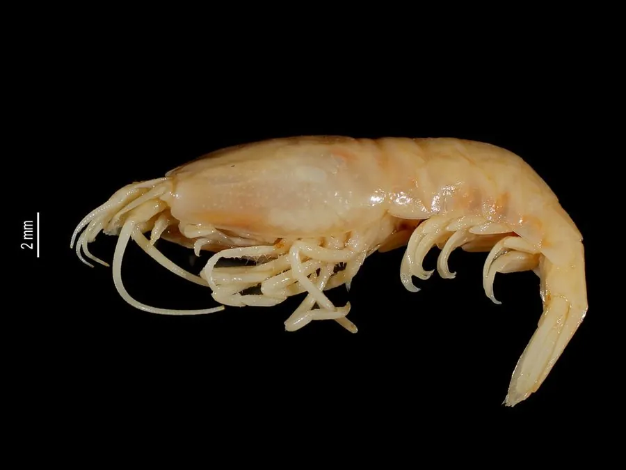

甲壳动物 · 动物界
盲虾 Rimicaris exoculata

生活在深海热液喷口的盲虾，眼睛退化，背部有一对白色斑块，靠体内共生细菌提供营养，成群聚集在热液口周围。
- 分类
- 门节肢动物门纲软甲纲目十足目科阿尔文虾科属里米卡虾属
- 栖息环境
- 水深 1500–3600 m 的深海热液喷口周围
- 地理分布
- 大西洋中脊等深海热液区
- 保护级别
- IUCN 暂无评估；栖息地受深海采矿潜在威胁
物种志
盲虾体长 4–6 cm，身体呈淡橙或白色，头胸甲宽大，眼睛退化，只剩下一对白色的感光斑块，可以感知热液口的微弱光线；足和鳃腔中生活着大量化能合成细菌。
它分布于大西洋中脊等深海热液喷口，栖息于水深 1500–3600 m 的高温、高压环境，成群聚集在热液口周围，靠体内的共生细菌固定二氧化碳、氧化硫化物提供营养。盲虾的白色斑块能感知热液口发出的微弱热辐射，帮助它在黑暗中找到合适的位置。它是深海化能生态系统的关键物种，也是研究生命起源和极端环境适应的重要对象；盲虾群密度可达每平方米数千只，幼体在热液口附近浮游发育。目前 IUCN 暂无评估；深海采矿可能威胁其栖息地。
形态与习性
- 食性靠体内共生细菌提供营养
- 体长4–6 cm
- 识别身体淡橙或白色，眼睛退化，背部有白色斑块
- 栖息水深 1500–3600 m 的热液喷口
- 共生鳃腔和足部培养化能合成细菌
- 习性成群聚集在热液口周围
趣味知识
- 盲虾的眼睛已经退化，背上却有一对能感知热辐射的白色斑块。
- 它们成群挤在热液喷口周围，密度可达每平方米数千只。
- 盲虾靠体内细菌把硫化物变成营养，不依赖阳光。